REPARACIÓN DE LA UNIDAD
LOCALIZADOR DE COMPONENTES
Compresor SP17
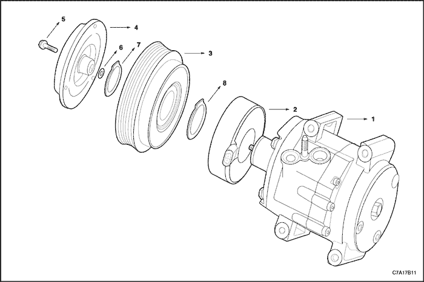


- Conjunto del compresor
- Conjunto de bobina y alojamiento
- Conjunto de cojinete y polea
- Conjunto de accionamiento y embrague
- Tornillo del eje
- Suplemento (entrehierro 1,0, 0,5, 0,3, 0,2)
- Retención de la polea
- Retención de la bobina
REVISIÓN GENERAL DEL COMPRESOR DEL AIRE ACONDICIONADO SP17
Conjunto de accionamiento y embrague
Herramientas necesarias
Útil de sujeción del cubo del embrague
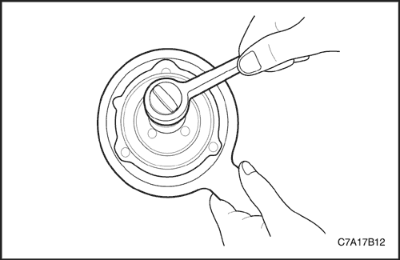
procedimiento de desmontaje (desarmado, desensamble, desensamblaje)
- Desmonte el compresor. Consulte el apartado "Compresor" de esta sección.
- Utilice la herramienta de sujeción del cubo del embrague J-33027 para evitar que el conjunto del plato de accionamiento y cubo del embrague giren.
- Quite la tuerca del eje con la ayuda de la boquilla para la tuerca del eje.
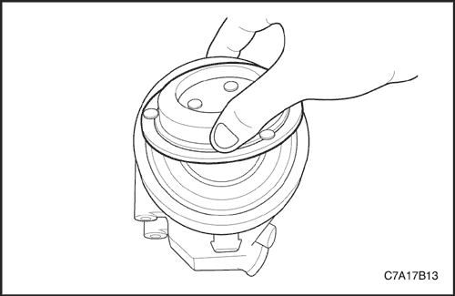
- Tire hacia arriba con la mano del conjunto de accionamiento del embrague para extraerlo.
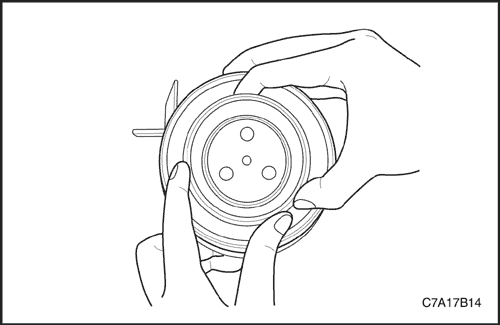
Procedimiento de montaje (armado, ensamblaje)
- Monte el conjunto de accionamiento y embrague.
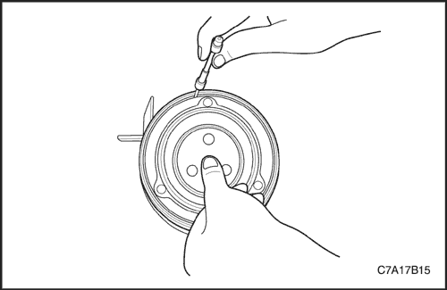
- Compruebe aproximadamente el entrehierro con la galga presionando el conjunto de accionamiento del embrague antes de fijar el tornillo del eje. (Entrehierro: 0,3~0,6 mm)
Aviso: Si el entrehierro no es correcto, cambie el suplemento para que cumpla el entrehierro.
- Coloque la tuerca de fijación del conjunto del cubo y plato del embrague.
Apretar
Apriete la tuerca de fijación del conjunto de accionamiento del embrague hasta 13 N•m (10 lb-pie).
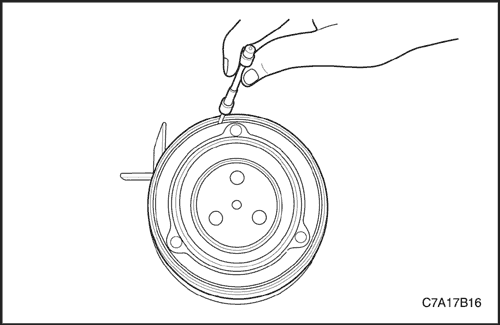
- Vuelva a comprobar el entrehierro con la galga. (Entrehierro: 0,3~0,6 mm)
- Monte el compresor. Consulte el apartado "Compresor" de esta sección.
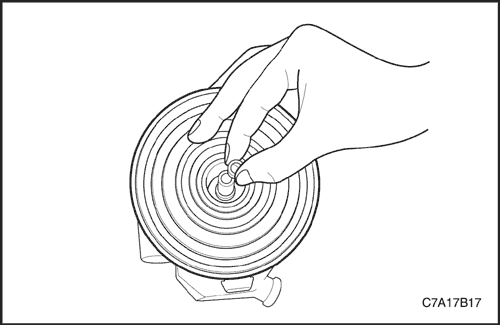
Conjunto de cojinete y polea
procedimiento de desmontaje (desarmado, desensamble, desensamblaje)
- Desconecte el cable negativo de la batería.
- Recupere el refrigerante. Consulte el apartado "Procedimientos de descarga, adición de aceite, evacuación y carga para el sistema de aire acondicionado" de esta sección.
- Desmonte el compresor. Consulte el apartado "Compresor" de esta sección.
- Desmonte el conjunto de accionamiento y embrague. Consulte el apartado "Conjunto del accionamiento del embrague" de esta sección.
- Retire los suplementos del extremo del eje.
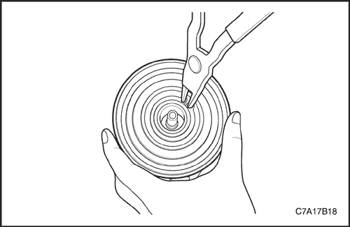
- Extraiga el anillo de retención del conjunto de cojinete y polea.
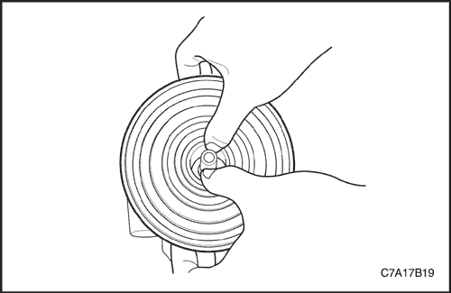
- Tire de la polea hacia arriba con las dos manos hasta que se libere el conjunto de cojinete y polea.
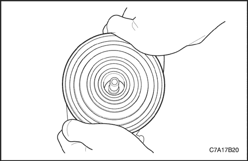
procedimiento de montaje
Aviso: No utilice un martillo, si lo hace podría dañar el cojinete de la polea.
- Coloque la polea del rotor en el alojamiento del cabezal delantero con precisión y exactitud.
- Ejerza más presión en la superficie de la polea con las dos manos.
Precaución: Si el cojinete de la polea se acopla correctamente, debería oírse ligera variación de sonido durante el proceso de montaje; preste atención.
- Gire la polea manualmente para comprobar si está correctamente instalada.
- Coloque el anillo de retención del conjunto de cojinete y polea.
- El borde afilado de la retención de la bobina debe colocarse en la parte superior.
- Hay que apretarlo después del montaje para asegurarse de que se ha montado correctamente.
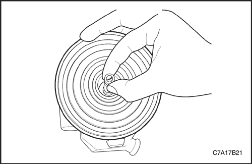
- Determine cuántos suplementos y de qué tipo son necesarios para que el entrehierro esté entre 0,3~0,6 mm.
- Monte los suplementos en el extremo del eje.
- Monte el conjunto de accionamiento y embrague. Consulte el apartado "Conjunto del accionamiento del embrague" de esta sección.
- Monte el compresor. Consulte el apartado "Compresor" de esta sección.
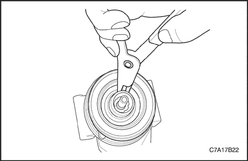
Bobina de embrague
Procedimiento de desmontaje
- Desconecte el cable negativo de la batería.
- Recupere el refrigerante. Consulte el apartado "Procedimientos de descarga, adición de aceite, evacuación y carga para el sistema de aire acondicionado" de esta sección.
- Desmonte el compresor. Consulte el apartado "Compresor" de esta sección.
- Desmonte el conjunto de accionamiento y embrague. Consulte el apartado "Conjunto del accionamiento del embrague" de esta sección.
- Desmonte el conjunto de cojinete y polea. Consulte el apartado "Conjunto de cojinete y polea" de esta sección.
- Retire el anillo de retención de la bobina.
- Desmonte el conjunto de bobina y alojamiento.
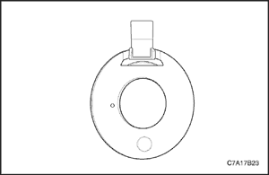
procedimiento de montaje
- Antes del montaje, compruebe que el relieve del plato de la bobina está colocado en la ranura de ubicación de la bomba del compresor para que la bobina no pueda girar.
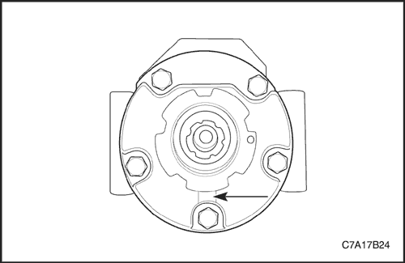
- El orificio de ubicación del plato de la bobina debe colocarse en el pasador de ubicación de la bomba del compresor para que la bobina no gire. (sólo VM Diesel)
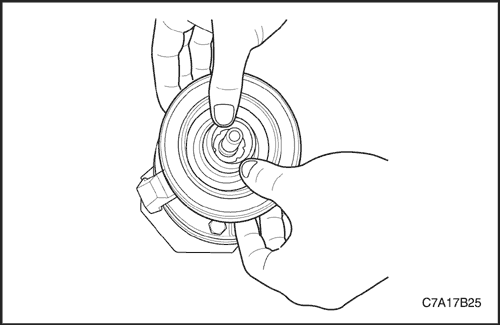
- Coloque el conjunto de bobina y alojamiento.
Aviso: El anillo de retención de la bobina no puede asentarse si no se coloca correctamente.
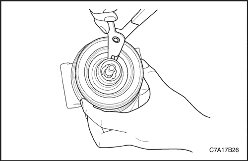
- Asegúrese de que el borde biselado de la retención de la bobina queda colocado en la parte superior.
- Instale la retención del conjunto de bobina y alojamiento.
Aviso: Tras la instalación, tendrá que apretarla para asegurarse de que se ha montado correctamente.
- Monte el conjunto de cojinete y polea. Consulte el apartado "Conjunto de cojinete y polea" de esta sección.
- Monte el conjunto de accionamiento y embrague. Consulte el apartado "Conjunto de accionamiento del embrague" de esta sección.
- Monte el compresor. Consulte el apartado "Compresor" de esta sección.
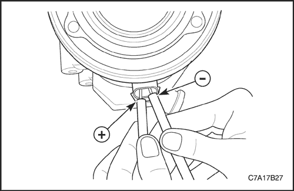
Prueba de funcionamiento del embrague
- Embrague y desembrague más de 2 veces para verificar que el embrague funcione correctamente.
- Si el embrague no embraga en menos de 1 segundo con 10,5 voltios, compruebe la resistencia de la bobina (la especificación para la resistencia es de 3,3± 4% ohmios a 25°C).
Precaución: No debe invertirse la polaridad de la bobina durante la prueba de funcionamiento del embrague. Si se invierte, debería acortarse el diodo.
Equilibrado del aceite del compresor
Requisitos de la carga de aceite
Todos los compresores SP17 se suministran con una carga de aceite de 150+/-10 cc.
Se debe tener cuidado para garantizar que se carga la cantidad de aceite necesaria en el sistema del A/A. La escasez de aceite afectará a la durabilidad del compresor. El exceso de aceite en el sistema podría causar un ruido de golpeteo cuando se pone en marcha el compresor.
Procedimiento de equilibrado de aceite del compresor
El aceite del compresor puede cargarse y drenarse a través de los orificios de aspiración y descarga.
Cuando se desmonta un compresor del vehículo para su reparación, existen dos métodos para el equilibrado correcto del sistema de aire acondicionado:
- Primer método: Lave todo el sistema de A/A y utilice una nueva unidad del compresor SP17, ya cargada con aceite de 150 cc.
- Segundo método:
- Drene y mida el aceite lubricante del compresor que ha desmontado. Mida la cantidad perdida (normalmente el compresor SP17 debe retener 15~60 cc de aceite)
Aviso: Si se ha producido una pérdida de aceite importante, debido a la presencia de grietas en la caja del compresor o a la rotura del condensador, lave el sistema del A/A e instale un compresor nuevo. No es necesario comprobar el lubricante.
- Drene aproximadamente 150 cc de aceite lubricante del nuevo compresor de recambio.
- Rellene el nuevo compresor con la misma cantidad de aceite lubricante que se midió en el paso a). Utilice el aceite "nuevo" del compresor de recambio.
 | |  | |
| © Copyright Chevrolet Europe. Reservados todos los derechos |